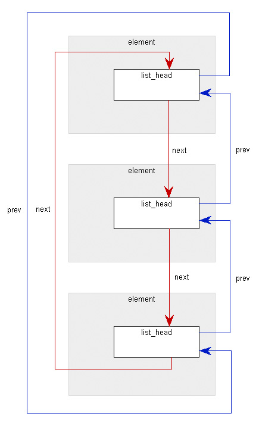
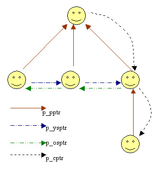
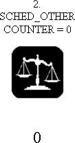
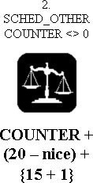

| spis tre¶ci | => | Agnieszka Harasimczuk |
Aby zarz±dzaæ procesami j±dro musi mieæ pe³ne informacje na ich temat. Jest to zadanie deskryptora procesu, maj±cego strukturê typu task_struct, której pola zawieraj± informacje dotycz±ce jednego procesu.
| spis tre¶ci | => | Maciej Makowski |

|
| spis tre¶ci | => | Agnieszka Harasimczuk |
struct task_struct *next_task, *prev_task - pozwalaj± powi±zaæ wszystkie procesy w dwukierunkow± listê cykliczn±;
unsigned long flags - zmienna zawiera po³±czenie flag systemu:
PF_ALIGNWARN | /* jeszcze nie zaimplementowana */ | ||
PF_STARTING | /* proces tworzony */ | ||
PF_EXITING | /* proces koñczony */ | ||
PF_FORKNOEXEC | /* proces potomny po operacji fork, jeszcze nie wykonywany */ | ||
F_SUPERPRIV | /* proces ma uprawnienia super u¿ytkownika */ | ||
PF_DUMPCORE | /* proces "zrzuca" obszar pamiêci */ | ||
PF_SIGNALED | /* u¶miercony sygna³em */ | ||
PF_MEMALLOC | /* proces w czasie alokacji pamiêci */ |
struct mm_struct *mm - wska¼niki do deskryptorów obszarów pamiêciint has_cpu, processor - procesor, na jakim proces siê wykonujeunsigned long cpus_allowed - informacja, na których procesorach proces mo¿e siê wykonywaæstruct linux_binfmt *binfmt - dziêki tej zmiennej mo¿emy uruchamiaæ w Linuksie programy przez napisanie ich nazw/* identyfikator procesu */pid_t pid - numer identyfikacyjny procesupid_t pgrp - numer identyfikacyjny grupy procesówpid_t session - identyfikator sesjiint leader - warto¶æ mówi±ca, czy proces jest liderem grupyint ngroups - ilo¶æ grup, do których nale¿y procesgid_t groups[NGROUPS] - struktury opisuj±ce grupy, do których proces nale¿ystruct task_struct *p_opptr, *p_pptr, *p_cptr, *p_ysptr, *p_osptr - zmienne te pokazuj± na:
|
 |
unsigned long start_time - moment, w którym proces zosta³ stworzonylong per_cpu_utime[NR_CPUS], per_cpu_stime[NR_CPUS] - tablice te przechowuj± informacje, ile czasu proces spêdzi³ odpowiednio w trybie u¿ytkownika i w trybie systemowym, na poszczególnych procesorachstruct user_struct *user - informacja o w³a¶cicielustruct tty_struct *tty - terminal zwi±zany z procesem (je¿eli nie ma NULL)struct sem_undo *semundo - informacja o zajmowanych semaforach/* szeregowanie */volatile long state - stan, w jakim znajduje siê proces (-1 unrunnable, 0 runnable, >0 stopped)volatile long need_resched - je¶li ta flaga jest ustawiona, oznacza to, ¿e potrzebne jest wykonanie przeszeregowania procesów - wywo³anie funkcji schedule();long counter - liczba tykniêæ zegara, które pozosta³y procesowi do zakoñczenia jego kwantu czasu; wywo³anie funkcji update_process_times() zmniejsza o jeden zawarto¶æ tego pola;long nice - wp³ywa na d³ugo¶æ kwantu czasu przyznanego procesowi (w starszych wersjach Linuksa jej rolê spe³nia³o priority); zmienia siê ona od -20 (najwy¿szy priorytet) do +19 (najni¿szy priorytet);unsigned long policy - polityka szeregowania;unsigned long rt_priority - statyczny priorytet procesów czasu rzeczywistego; przyjmuje warto¶ci od 0 (proces zwyk³y) do 99 (najwy¿szy priorytet);/* tablica pidhash */struct task_struct *pidhash_next - wykorzystywane przez tablicê z hashowaniemstruct task_struct **pidhash_pprev - j.w./* pliki */struct fs_struct *fs - tu znajduj± siê dane zwi±zane z systemem plikówstruct files_struct *files - informacje o plikach otwartych/* sygna³y */int exit_code, exit_signal - kod zakoñczenia procesu i sygna³ wyj¶ciaspinlock_t sigmask_lock - ochrona i blokada sygna³ówstruct signal_struct *sig - wska¼nik do tablicy przechowuj±cej informacje na temat sposobu obs³ugi otrzymanych sygna³ówsigset_t blocked - zawiera maski bitowe sygna³ów otrzymywanych, ale tych które s± obecnie zablokowane, wiêc trzeba bêdzie je obs³u¿yæ pó¼niej| spis tre¶ci | => | Agnieszka Harasimczuk |
Proces w trybie j±dra u¿ywa stosu zawartego w segmencie danych j±dra, który ró¿ni siê od stosu u¿ywanego w trybie u¿ytkownika. ¦cie¿ki wykonania j±dra rzadko u¿ywaj± tego stosu, wiêc 8KB jest wystarczaj±cym obszarem na stos i deskryptor procesu. Tak± strukturê wyra¿ono za pomoc± nastêpuj±cej unii:
union task_union {
struct task_struct task;
unsigned long stack[2048];
};
Rejestr esp jest wska¼nikiem stosu u¿ywanym do okre¶lenia po³o¿enia wierzcho³ka stosu. W systemach Intela stos zaczyna siê na koñcu i rozszerza w kierunku pocz±tku obszaru pamiêci, gdzie znajduje siê deskryptor procesu. Zaraz po prze³±czeniu siê z trybu u¿ytkownika do trybu j±dra, stos j±dra procesu jest pusty i rejestr esp wskazuje na bajt znajduj±cy siê tu¿ za obszarem pamiêci.
free_task_struct() - Funkcja zwraca 8-kilobajtowe obszary pamiêci task_union i umieszcza je w pamiêci podrêcznej do czasu zape³nienia.
alloc_task_struct() - Funkcja ta alokuje obszary pamiêci dla task_union o wielko¶ci 8 KB. (Uwaga: Z powodu wydajno¶ci j±dro przechowuje te 8 KB jako dwa, znajduj±ce siê obok siebie bloki stronicowe, gdzie pierwsza strona jest wyrównana do wielokrotno¶ci 213.)
| spis tre¶ci | => | Agnieszka Harasimczuk |
J±dro mo¿e w prosty sposób okre¶liæ wska¼nik deskryptora procesu aktualnie wykonuj±cego siê na podstawie warto¶ci rejestru esp. (Obszar pamiêci ma 213 bajtów, wiêc wystarczy, ¿e j±dro zamaskuje 13 najmniej znacz±cych bitów esp).
| spis tre¶ci | => | Agnieszka Harasimczuk |
Istniej± sytuacje, w których j±dro powinno mieæ mo¿liwo¶æ pobrania wska¼nika deskryptora na podstawie numeru pid (np. przy wywo³aniu funkcji systemowych zwi±zanych ze schedule()). W celu przyspieszenia przeszukiwania listy procesów i sprawdzania numerów pid w deskryptorach wprowadzono tablicê pidhash, która obecnie ma 1024 elementy. Pozycje tabeli zawieraj± wska¼niki do deskryptorów procesu. Pid jest t³umaczony na indeks tablicy za pomoc± nastêpuj±cego makra:
#define pid_hashfn(x) ((((x) >> 8) ^ (x)) & (1023))
Zdarzaj± siê sytuacje, ¿e dwa numery daj± ten sam indeks w tablicy. W tym celu Linux u¿ywa ³añcuchów (ka¿da pozycja tabeli to dwustronna lista koliduj±cych procesów, zrealizowana za pomoc± pidhash_next i pidhash_pprev w deskryptorze procesu).
Do wstawiania i usuwania procesów z tablicy s³u¿± funkcje: hash_pid() i unhash_pid(). Funkcja find_task_by_pid() zwraca wska¼nik deskryptora procesu o zadanym pid.
| spis tre¶ci | => | Maciej Makowski |
TASK_RUNNING - niekoniecznie wszystkie takie, bo operacje ustawienia stanu procesu na TASK_RUNNING i wstawienia go do kolejki procesów gotowych nie s± wykonywane atomowotask_struct jako pole run_list typu struct list_headidle nie jest umieszczany w kolejce procesów gotowychrunqueue_head zadeklarowanej w pliku Linux/kernel/sched.c
| spis tre¶ci | => | Maciej Makowski |
| ¶rodowisko: | nr_running | - licznik aktywnych procesów |
static inline void add_to_runqueue(struct task_struct * p)
{
list_add(&p->run_list, &runqueue_head);
nr_running++;
}
| spis tre¶ci | => | Maciej Makowski |
| ¶rodowisko: | nr_running | - licznik aktywnych procesów | ||
jiffies | - licznik liczby taktów, która up³ynê³a od startu systemu |
static inline void del_from_runqueue(struct task_struct * p)
{
nr_running--;
p->sleep_time = jiffies;
list_del(&p->run_list);
p->run_list.next = NULL;
}
run_list.next jest pó¼niej sprawdzana w celu ustalenia, czy proces znajduje siê w kolejce procesów gotowych
| spis tre¶ci | => | Maciej Makowski |
| ¶rodowisko: | runqueue_head | - wska¼nik do pierwszego elementu kolejki procesów gotowych |
static inline void move_last_runqueue(struct task_struct * p)
{
list_del(&p->run_list);
list_add_tail(&p->run_list, &runqueue_head);
}
| spis tre¶ci | => | Maciej Makowski |
| ¶rodowisko: | runqueue_head | - wska¼nik do pierwszego elementu kolejki procesów gotowych |
static inline void move_first_runqueue(struct task_struct * p)
{
list_del(&p->run_list);
list_add(&p->run_list, &runqueue_head);
}
| spis tre¶ci | => | Maciej Makowski |
wait_queue_t zawieraj±ca
task_struct
list_head
wait_queue_head_t, reprezentuj±ca g³owê kolejki, zawieraj±ca
list_head
WQ_FLAG_EXCLUSIVE| spis tre¶ci | => | Maciej Makowski |
add_wait_queue():
add_wait_queue() - wstawia element na pocz±tek kolejki bez ustawiania flagi WQ_FLAG_EXCLUSIVE
add_wait_queue_exclusive() - wstawia element na koniec kolejki ustawiaj±c flagê WQ_FLAG_EXCLUSIVE
| wej¶cie: | q | - kolejka procesów oczekuj±cych | ||
wait | - element kolejki, który ma zostaæ wstawiony |
add_wait_queue(q, wait):| 1: | wyzeruj flagê WQ_FLAG_EXCLUSIVE w wait | |
| 2: | wywo³aj __add_wait_queue(q, wait) |
add_wait_queue_exclusive(q, wait)| 1: | ustaw flagê WQ_FLAG_EXCLUSIVE w wait | |
| 2: | wywo³aj __add_wait_queue_tail(q, wait) |
__add_wait_queue() i __add_wait_queue_tail() wywo³uj± odpowiednio list_add() i list_add_tail()add_wait_queue() i add_wait_queue_exclusive() gwarantuje specyficzny uk³ad procesów w kolejce:| spis tre¶ci | => | Maciej Makowski |
remove_wait_queue() sprowadza siê do wywo³ania (z wy³±czonymi przerwaniami) __remove_wait_queue(), które z kolei ogranicza siê do wywo³ania list_del()
| spis tre¶ci | => | Maciej Makowski |
TASK_RUNNING - proces wykonuje siê, albo czeka na wykonanieTASK_INTERRUPTIBLE - proces wstrzymany w oczekiwaniu na zaj¶cie warunku (np. na zwolnienie siê zasobu). Mo¿e te¿ zostaæ obudzony przez przerwania sprzêtowe albo sygna³yTASK_UNINTERRUPTIBLE - proces wstrzymany w oczekiwaniu na zaj¶cie warunku, sygna³y nie zmieniaj± jego stanuTASK_STOPPED - proces zatrzymany na skutek otrzymania sygna³u SIGSTOP, SIGTSTP, SIGTTIN lub SIGTTOU, albo dowolnego sygna³u, je¶li jest monitorowany przez inny proces (np. przez debugger)TASK_ZOMBIE - proces zakoñczy³ siê, ale jego rodzic nie wywo³a³ jeszcze funkcji wait()
| spis tre¶ci | => | Maciej Makowski |
sleep_on():
sleep_on() - usypia proces w stanie TASK_UNINTERRUPTIBLE
interruptible_sleep_on() - usypia proces w stanie TASK_INTERRUPTIBLE
sleep_on_timeout() - usypia proces w stanie TASK_UNINTERRUPTIBLE na okre¶lony w parametrze czas
interruptible_sleep_on_timeout() - usypia proces w stanie TASK_INTERRUPTIBLE na okre¶lony w parametrze czas
| wej¶cie: | q | - kolejka na której proces ma zasn±æ | ||
| ¶rodowisko: | current | - bie¿±cy proces (to jego usypiamy) |
| 1: | zainicjalizuj wait - nowy element kolejki procesów oczekuj±cych wskazuj±cy na current | |
| 2: | ustaw stan aktualnego procesu | |
| 3: | wywo³aj __add_wait_queue(q, wait) | |
| 4: | wywo³aj odpowiedni± wersjê schedule() | |
| 5: | wywo³aj __remove_wait_queue(q, wait) |
interruptible_, czy nie_timeout, czy nie. W pierwszym wypadku wywo³ana zostanie funkcja schedule_timeout(), w drugim schedule()__add_wait_queue() i __remove_wait_queue() wywo³uj± odpowiednio list_add() i list_del();add_wait_queue() i remove_wait_queue()sleep_on() umieszczany jest na pocz±tku kolejki q i nie ma ustawionej flagi WQ_FLAG_EXCLUSIVE
| spis tre¶ci | => | Maciej Makowski |
try_to_wake_up(p, synchronous) ustawia stan procesu p na TASK_RUNNING, wstawia p do kolejki procesów gotowych (o ile siê na niej jeszcze nie znajduje) i (w zale¿no¶ci od warto¶ci argumentu synchronous) wywo³uje reschedule_idle(p)0 je¶li p by³ ju¿ w kolejce procesów gotowych, 1 w przeciwnym przypadku| wej¶cie: | p | - proces do obudzenia | ||
synchronous | - tryb synchroniczny/asynchroniczny |
| 1: | ustaw stan p na TASK_RUNNING | |
| 2: | je¶li p znajduje siê w kolejce procesów gotowych | |
| 3: | zwróæ 0 | |
| 4: | koniec je¶li | |
| 5: | dodaj p do kolejki procesów gotowych | |
| 6: | je¶li (synchronous == 0) lub (p nie mo¿e siê wykonywaæ na nastêpnym z kolei procesorze) | |
| 7: | wywo³aj reschedule_idle(p) | |
| 8: | koniec je¶li | |
| 9: | zwróæ 1 |
reschedule_idle(p) jest zawsze wykonywane| spis tre¶ci | => | Maciej Makowski |
wake_up() s³u¿± do budzenia procesów z zadanej kolejkiwake_up():
wake_up(q)
wake_up_nr(q, nr)
wake_up_all(q)
wake_up_sync(q)
wake_up_sync_nr(q, nr)
wake_up_interruptible(q)
wake_up_interruptible_nr(q, nr)
wake_up_interruptible_all(q)
wake_up_interruptible_sync(q)
wake_up_interruptible_sync_nr(q, nr)_interruptible - te wersje wake_up() budz± tylko procesy znajduj±ce siê w stanie TASK_INTERRUPTIBLE; pozosta³e budz± zarówno procesy w stanie TASK_INTERRUPTIBLE jak i TASK_UNINTERRUPTIBLE_all - budzi wszystkie procesy (w odpowiednich stanach) bez wzglêdu na to, czy maj± ustawion± flagê WQ_FLAG_EXCLUSIVE_nr - budzi wszystkie procesy bez ustawionej flagi WQ_FLAG_EXCLUSIVE oraz podan± jako drugi argument liczbê procesów z ustawion± t± flag±_sync - umo¿liwia obudzenie procesu bez dokonywania przeszeregowania (bez wywo³ywania reschedule_idle() na rzecz tego procesu) w systemach wieloprocesorowych_all, ani _nr, to budzone s± wszystkie procesy nie oznaczone flag± WQ_FLAG_EXCLUSIVE i dok³adnie jeden proces z ustawion± t± flag± (o ile istnieje)
wake_up() sprowadzaj± siê do wywo³ania funkcji __wake_up_common(q, mode, nr_exclusive, sync) z odpowiednimi parametrami__wake_up_common():| wej¶cie: | q | - kolejka procesów oczekuj±cych | ||
mode | - stany procesów, które maj± byæ budzone | |||
nr_exclusive | - liczba procesów z ustawion± flag± WQ_FLAG_EXCLUSIVE do obudzenia | |||
sync | - tryb synchroniczny/asynchroniczny (argument dla try_to_wake_up()) |
| 1: | powtarzaj dla ka¿dego procesu p w kolejce q | |
| 2: | je¶li stan p zgadza siê z mode | |
| 3: | je¶li wywo³anie try_to_wake_up(p, sync) zwróci³o 1 | |
| 4: | je¶li p ma ustawion± flagê WQ_FLAG_EXCLUSIVE | |
| 5: | zmniejsz nr_exclusive o 1 | |
| 6: | je¶li nr_exclusive == 0 | |
| 7: | zakoñcz | |
| 8: | koniec je¶li | |
| 9: | koniec je¶li | |
| 10: | koniec je¶li | |
| 11: | koniec je¶li | |
| 12: | koniec powtarzaj |
q - usuwanie odbywa siê w sleep_on()
| spis tre¶ci | => | Agnieszka Harasimczuk |
Algorytm szereguj±cy dzieli czas procesora na epoki. Na pocz±tku ka¿dej z nich ka¿demu procesowi jest przypisany pewien kwant czasu. Proces w trakcie jednej epoki mo¿e mieæ dostêp do procesora wielokrotnie, dopóki nie skoñczy mu siê jego kwant. Przy ka¿dym tykniêciu zegara, bie¿±cemu procesowi odejmuje siê jedynkê od pozosta³ego kwantu czasu. Gdy ca³y kwant jest skoñczony proces jest wyw³aszczany. Epoka koñczy siê, gdy wszystkie procesy gotowe do dzia³ania maj± ju¿ wykorzystany swój czas, wtedy nastêpuje przeliczenie kwantów (dla ka¿dego procesu w systemie) i rozpoczêcie nowej epoki.
| spis tre¶ci | => | Agnieszka Harasimczuk |
Ze wzglêdu na czas reakcji na okre¶lone zdarzenie, procesy mo¿na podzieliæ na nastêpuj±ce grupy:
schedule(). Na przyk³ad: kompilatory, mechanizmy baz danych...| spis tre¶ci | => | Agnieszka Harasimczuk |
W systemie Linux s± zaimplementowane nastêpuj±ce klasy procesów:
fork(), inicjalizowany makrodefinicjami INIT_TASK. Proces ten ca³y czas znajduje siê w stanie TASK_RUNNING i w przypadku, gdy nie ma nikogo chêtnego do pracy on otrzymuje procesor. Gdy tylko pojawia siê jakikolwiek gotowy proces idle jest wyw³aszczany.| spis tre¶ci | => | Agnieszka Harasimczuk |
J±dro Linuksa w wersji 2.4.7 teoretycznie implementuje trzy polityki szeregowania. Z czego dwie pierwsze dotycz± tylko procesów czasu rzeczywistego, natomiast trzecia procesów zwyk³ych:
sched_yield() - niestety jest to tylko teoria, gdy¿ obecnie funkcja ta nie dzia³a poprawnie). Równie¿ proces o wy¿szym priorytecie (czyli musi to byæ proces czasu rzeczywistego), który przejdzie do stanu TASK_RUNNING odbierze mu procesor.goodness()). Proces szeregowany zgodnie z t± polityk± mo¿e straciæ procesor, je¿eli:
sched_yield())
| spis tre¶ci | => | Agnieszka Harasimczuk |
Funkcja ta jest zasadnicz± czê¶ci± szeregowania procesów w systemie Linux. Jest ona wywo³ywana na dwa sposoby: bezpo¶rednio i po¶rednio.
ret_from_sys_call w pliku entry.S). Tak¿e bezpo¶rednio w sytuacji, gdy zaistnieje potrzeba zablokowania aktualnego procesu w trybie natychmiastowym, gdy¿ wymagane przez niego zasoby nie s± dostêpne (Jest to z regu³y wykonywane przez przekroczenie czasu procesu - schedule_timeout()). Równie¿ funkcje sleep_on() oraz interruptible_sleep_on() wywo³uj± schedule(). Jednak¿e w pierwszym przypadku po odzyskaniu procesora jest sprawdzana dostêpno¶æ zasobów, a w drugim ju¿ nie.need_resched aktywnego procesu. Jest to robione, gdy:
update_process_times())
reschedule_idle()
sched_setscheduler() lub sched_yield()
| spis tre¶ci | => | Agnieszka Harasimczuk |
current - wska¼nik do procesu, który posiada procesor;
Pola struktury task_struct:
state - stan, w jakim znajduje siê proces;need_resched - je¶li ta flaga jest ustawiona, oznacza to, ¿e potrzebne jest wykonanie przeszeregowania procesów - wywo³anie funkcji schedule();policy - polityka szeregowania;rt_priority - statyczny priorytet procesów czasu rzeczywistego; przyjmuje warto¶ci od 0 (proces zwyk³y) do 99 (najwy¿szy priorytet);nice - wp³ywa na d³ugo¶æ kwantu czasu przyznanego procesowi, zmienia siê ona od -20 (najwy¿szy priorytet) do +19 (najni¿szy priorytet);counter - liczba tykniêæ zegara, które pozosta³y procesowi do zakoñczenia jego kwantu czasu; wywo³anie funkcji update_process_times() zmniejsza o jeden zawarto¶æ tego pola;
| spis tre¶ci | => | Agnieszka Harasimczuk |
Powy¿sze makro jest zdefiniowane w nastêpuj±cy sposób:
#define NICE_TO_TICKS(nice) (TICK_SCALE(20-(nice))+1)
Makro TICK_SCALE zale¿y od warto¶ci zmiennej HZ, gdzie HZ jest sta³±, zale¿n± od architektury komputera, okre¶laj±c± czêstotliwo¶æ przerwañ zegara. Dla architektury Intela i386 HZ wynosi 100. Z tego te¿ wzglêdu w naszym przypadku makro TICK_SCALE(x) jest zdefiniowane jako x >> 2. Z tego wynika, ¿e zwraca ono warto¶æ ((20-nice) >> 2) + 1.
Przyk³ad:
St±d wniosek, ¿e NICE_TO_TICKS zwraca warto¶ci od +11 do +1.
| spis tre¶ci | => | Agnieszka Harasimczuk |
Funkcja decyduje jak po¿±dany jest proces. "Wa¿no¶æ" procesu zale¿y od jego typu: wsadowy, interakcyjny, czy czasu rzeczywistego oraz od aktualnego procesora.
|  |  |
counter jest ró¿ne od 0, wag± staje siê warto¶æ tego pola. Jednak¿e w pewnych przypadkach goodness() jest bardziej przychylna dla danego procesu (dodatkowo zwiêksza jego wagê), tzn. wtedy, je¿eli proces pracowa³ poprzednio na tym procesorze, waga jego jest dodatkowo zwiêkszana o sta³± warto¶æ równ± PROC_CHANGE_PENALTY (ustawion± na sta³e na 15); lub te¿, je¿eli proces ma t± sam± przestrzeñ adresow± co bie¿±cy, jego waga jest zwiêkszana o 1. Na zakoñczenie do wagi dodawana jest warto¶æ (20 - nice). rt_priority.
Wnioski: Waga dodatnia oznacza, ¿e proces jest dobrym kandydatem na otrzymanie procesora (im wy¿sza waga tym chêtniej przyznajemy CPU), natomiast waga zerowa, b±d¼ ujemna oznacza, ¿e proces nie mo¿e otrzymaæ procesora, gdy¿ nie ma na to odpowiednich warunków.
| spis tre¶ci | => | Agnieszka Harasimczuk |
Funkcja schedule() dzia³a wed³ug nastêpuj±cego algorytmu:
schedule() gwarantujemy, ¿e przerwania s± w³±czone. (Jednak¿e s± momenty, w których musimy je wy³±czyæ).NICE_TO_TICKS()) oraz taki proces jest ustawiany na koñcu kolejki procesów gotowych.schedule() sprawdza, czy nadszed³ nieblokowany sygna³, je¿eli tak zmienia mu stan na TASK_RUNNING.goodness() opisanej powy¿ej. Wyboru dokonuje w kilku krokach.idle. Jednak¿e otrzymuje on procesor tylko pod warunkiem, ¿e w danej chwili nikt inny nie jest gotowy do dzia³ania. Z tego te¿ wzglêdu jego "wa¿no¶æ" jest ustawiana na -1000 (Pozosta³e procesy otrzymuj± wy¿sz± wagê, co zapewnia poprawne dzia³anie).schedule() sprawdza, czy bie¿±cy proces, (pod warunkiem, ¿e jest w stanie TASK_RUNNING) móg³by otrzymaæ jeszcze raz procesor, (badane jest, czy dany proces mo¿e pracowaæ na tym procesorze poprzez sprawdzenie stanu jego pola cpus_allowed struktury task_struct), je¿eli tak - jest uznawany za lepszego kandydata ani¿eli idle i jest brany jako pierwszy pod uwagê (schedule() zapamiêtuje jego wagê). Dziêki tej operacji w przypadku, gdy kilka procesów dostanie najwy¿sz± warto¶æ - w tym tak¿e bie¿±cy, to jemu zostanie przyznany procesor.goodness(). Waga kolejnych procesów jest porównywana z ostatnio zapamiêtan± warto¶ci±, je¿eli jest wy¿sza to oznacza, ze ten proces jest lepszym kandydatem do procesora).
list_for_each(tmp, &runqueue_head) {
p = list_entry(tmp, struct task_struct, run_list);
if (can_schedule(p, this_cpu)) {
int weight = goodness(p, this_cpu, prev->active_mm);
if (weight > c)
c = weight, next = p;
}
}
Po przej¶ciu powy¿szej pêtli mog± wyst±piæ trzy ró¿ne sytuacje. Po pierwsze mo¿e siê okazaæ, ¿e znale¼li¶my proces, który powinien otrzymaæ CPU - czyli zapamiêtana warto¶æ jest dodatnia. Po drugie mo¿e ona mieæ warto¶æ -1000, co jest równoznaczne, ¿e ¿aden proces nie chce lub nie mo¿e dzia³aæ, wiêc proces jest przyznany idle. (goodness() zwraca warto¶æ 0 lub >0, dla ka¿dego prawid³owego procesu, czyli gdyby w naszej kolejce runqueue, by³ jaki¶ odpowiedni proces to pamiêtana warto¶æ by³aby nieujemna). I po trzecie mo¿e byæ sytuacja, w której najwy¿sz± warto¶ci± okaza³o siê zero - a to oznacza, ¿e wszystkie procesy skoñczy³y ju¿ swoje kwanty czasu. W tej sytuacji nale¿y przyznaæ wszystkim procesom nowe kwanty czasu (nie tylko tym z listy procesów bie¿±cych). W tym celu korzystamy z nastêpuj±cego algorytmu:
for_each_task(p)
p->counter = (p->counter >> 1) + NICE_TO_TICKS(p->nice);
Czyli do przeliczenia priorytetów dynamicznych, potrzebna jest znajomo¶æ czasu, który pozosta³ procesowi (warto¶æ counter) z ostatniego przydzia³u oraz warto¶æ wyliczona z priorytetu bazowego przy pomocy makra NICE_TO_TICKS.schedule() zdejmuje blokadê z runqueue. Wydaje siê to trochê dziwne, jednak¿e trzeba zauwa¿yæ, ¿e przeliczeniu podlegaj± absolutnie wszystkie procesy, co mo¿e zaj±æ stosunkowo du¿o czasu, podczas gdy inny procesor móg³by chcieæ wywo³aæ funkcjê schedule(), w celu wybrania najlepszego procesu na ten procesor.schedule() wraca z powrotem na pocz±tek punktu 4. task_struct: has_cpu na 1 i processor na this_cpu. switch_to(), prze³±czenie kontekstu.reschedule_idle(), która to sprz±ta wszelkie pozosta³e, niepoustawiane znaczniki po schedulerze (np. wy³±cza flagê SCHED_YIELD, a w przypadku SMP ustawia pola dotycz±ce procesora). Funkcja ta w systemie wieloprocesorowym wywo³uje te¿ funkcjê reschedule_idle() (oczywi¶cie pod warunkiem, ¿e wyw³aszczony proces nie by³ procesem idle). reschedule_idle() jest bardzo wa¿n± funkcj± - czêsto jest wywo³ywana w celu ustawienia flagi need_resched (w systemie jednoprocesorowym dotyczy to przypadku, gdy proces, dla którego j± wywo³ano ma wiêkszy priorytet od bie¿±cego). W Linuksie SMP sprawdza, czy proces, któremu w³a¶nie odebrano procesor, nie móg³by wyw³aszczyæ kogo¶ z innego CPU.
| spis tre¶ci | => | Agnieszka Harasimczuk |
Poni¿sze funkcje s³u¿± do zmiany priorytetów procesów i ich polityki szeregowania, oraz do odczytywania tych danych. Ka¿dy u¿ytkownik mo¿e dowolnie obni¿aæ priorytety swoich procesów, ale tylko administrator mo¿e tak¿e je podwy¿szaæ.
nice(int increment)nice). Increment mo¿e przyjmowaæ dowolne warto¶ci ca³kowite, ale je¿eli jest >+40, to zostaje obciête do +40, natomiast, gdy jest <-40 zostaje obciête do -40. Po wywo³aniu tej funkcji pole nice ma warto¶æ (nice + increment) (ale oczywi¶cie obcinamy to do zakresu -20...+19). Czyli im warto¶æ increment jest mniejsza, tym bardziej podwy¿szamy priorytet.sched_yield(void)runqueue, o stanie TASK_RUNNING, który nie pracuje na ¿adnym innym procesorze), ustawia znacznik need_resched, a w przypadku procesu zwyk³ego zaznacza równie¿, ¿e wywo³a³ t± funkcjê, tzn. ustawia w polu policy dodatkowo flagê SCHED_YIELD.sched_getscheduler(pid_t pid)sched_setscheduler(pid_t pid, int policy, struct sched_param *param)rt_priority). Proces taki jest przenoszony na pocz±tek kolejki procesów gotowych i jest ustawiana flaga need_resched.sched_getparam(pid_t pid, struct sched_param *param)rt_priority).sched_setparam(pid_t pid, struct sched_param *param)
Funkcja analogiczna do sched_setscheduler(), tylko nie zmienia priorytetu.sched_get_priority_min(int policy)sched_get_priority_max(int policy)sched_rr_get_interval(pid_t pid, struct timespec *interval)NICE_TO_TICKS) (innego ni¿ SCHED_FIFO - ten teoretycznie pracuje bez ograniczeñ).
| spis tre¶ci | => | Huber ¦led¼ |
Jak wiadomo, funkcje j±dra s± wykonywane w nastêpstwie ¿±dañ, które mog± byæ zg³aszane na dwa sposoby:
Sekwencja instrukcji, wykonywana w trybie j±dra w celu obs³u¿enia ¿±dania, jest nazywana ¶cie¿k± wykonania j±dra.
¦cie¿ki wykonania j±dra pe³ni± rolê podobn± do procesów, s± jednak prostsze. Przede wszystkim nie jest z nimi zwi±zany ¿aden deskryptor, poza tym nie s± szeregowane za pomoc± jednej funkcji, ale przez wstawienie do kodu j±dra sekwencji instrukcji zatrzymuj±cych lub wznawiaj±cych ¶cie¿ki.
W najlepszym przypadku procesor wykonuje ¶cie¿ki wykonania j±dra sekwencyjnie, od pierwszej do ostatniej instrukcji. Niestety, je¿eli siê zdarzy:
to procesor musi przeplataæ ¶cie¿ki wykonania j±dra. I tutaj trzeba uwa¿aæ na struktury danych zawieraj±ce kilka powi±zanych zmiennych. Wszystkie instrukcje operuj±ce na takiej strukturze trzeba umie¶ciæ w jednej sekcji krytycznej.
W Linuksie s± wyró¿nione cztery techniki synchronizacji:
| spis tre¶ci | => | Huber ¦led¼ |
W systemach jednoprocesorowych Linux oferuje jeden rodzaj blokad, tzw. semafory j±dra.
W przypadku gdy ¶cie¿ka wykonania j±dra chce pobraæ zajêty, chroniony przez semafor j±dra, zasób, to odpowiedni proces zostanie u¶piony. Zacznie swoje dzia³anie wtedy, gdy zasób stanie siê dostêpny.
Semafory j±dra s± obiektami typu struct semaphore [Linux/include/asm-i386/semaphore.h] i maj± nastêpuj±ce pola:
atomic_t count - przechowuje warto¶æ ca³kowit±. Je¿eli jest wiêksza ni¿ 0, oznacza to, ¿e zasób jest dostêpny. Je¿eli warto¶æ count jest mniejsza lub równa 0, to zasób jest zajêty. Zmienna typu atomic_t jest struktur± zawieraj±c± jeden atrybut typu int, na której w sposób atomowy s± zdefiniowane pewne operacje arytmetyczne.wait_queue_head_t wait - przechowuje adres kolejki oczekiwania, która zawiera wszystkie u¶pione procesy, czekaj±ce aktualnie na zasóbint sleepers - zmienna pomocnicza, która mówi ile procesów w danej chwili przejdzie pod semaforem. Jest ona inicjalizowana na 0.Pole count jest zwiêkszane, gdy proces chce podnie¶æ semafor, a zmniejszane gdy go opuszcza.
Je¿eli proces chce podnie¶æ semafor, wywo³uje funkcjê up().
| spis tre¶ci | => | Huber ¦led¼ |
Najpierw proces zwiêksza warto¶æ count i porównuje j± z zerem (porównanie i test s± wykonywane atomowo). Je¿eli nowa warto¶æ count jest wiêksza od zera, to w kolejce oczekiwania semafora nie ma ¿adnego procesu, tak wiêc proces nic wiêcej nie robi. W przeciwnym wypadku, (count <=0) budzi pierwszy proces z kolejki procesów czekaj±cych na zasób (funkcja wake_up()). Wykonanie funkcji wake_up() jest chronione, tzn. przed wykorzystywaniem elementów kolejki zapamiêtywane s± flagi oraz wy³±czane przerwania, a po zakoñczeniu dzia³añ na kolejce przerwania zostaj± w³±czane, a flagi odtwarzane.
void up(semaphore *sem)
{
/* Sekcja krytyczna */
sem->count ++;
if (sem->count <= 0) /* wpp. kolejka oczekiwania jest pusta */
{
/* Koniec sekcji */
Wstaw nastêpny proces z kolejki oczekiwania semafora do kolejki procesów gotowych.
/* Budzenie procesu - funkcja wake_up */
}
}
Je¿eli proces chce opu¶ciæ semafor, wywo³uje funkcjê down().
| spis tre¶ci | => | Huber ¦led¼ |
Analogicznie jak w funkcji up(), na pocz±tku proces zmniejsza warto¶æ count i porównuje j± z zerem (operacja atomowa). Je¿eli nowa warto¶æ count jest wiêksza b±d¼ równa zero, to procesowi uda³o siê przej¶æ pod semaforem i zaj±æ zasób, w przeciwnym wypadku proces zmienia swój stan na TASK_UNINTERRUPTIBLE oraz wstawia siê do kolejki wait - procesów czekaj±cych na zasób (funkcja add_wait_exclusive() - analogiczna ochrona jak w wake_up(), przy wykonywaniu tej funkcji). Nastêpnie proces wy³±cza przerwania (makro spin_lock_irq()) i zwiêksza warto¶æ sleepers. Zaczyna wykonywaæ pêtlê. Atomowo zwiêksza count o (sleepers - 1) (makro atomic_add_negative()) i sprawdza czy warto¶æ count jest wiêksza b±d¼ równa zero. Je¶li tak, to mo¿e pobraæ zasób. Ustawia sleepers na 0 (¿eby zablokowaæ inne procesy), wychodzi z pêtli, odblokowuje przerwania (makro spin_unlock_irq()), usuwa siê z kolejki wait (funkcja remove_wait_queue()), zmienia stan na TASK_RUNNING i budzi pierwszy proces z kolejki wait funkcj± wake_up(). Je¶li count < 0, to musi zasn±æ. Ustawia sleepers na 1, odblokowuje przerwania i wywo³uje funkcje schedule(), która go usypia (wyw³aszcza). Po obudzeniu powtarza pêtlê a¿ do skutku.
void down(struct semaphore *sem)
{
/* Sekcja krytyczna */
sem->count--;
if (sem->count < 0) /* wpp. uda³o siê przej¶æ pod semaforem */
{
/* Koniec sekcji */
Zmieñ stan procesu na TASK_UNINTERRUPTIBLE;
Wstaw proces do kolejki oczekiwania semafora. /* add_wait_queue_exclusive() */
Wy³±czenie przerwañ /* spin_lock_irq() */
sem->sleepers++;
for (;;){
int sleepers = sem->sleepers;
if ((sem->count += sleepers - 1) >= 0)/*!atomic_add_negative(sleepers-1, sem->count)*/
{ /* kto¶ podniós³ semafor */
sem->sleepers = 0;
break; /* mo¿emy pobraæ zasób*/
}
sem->sleepers = 1;
W³±czenie przerwañ /* spin_unlock_irq() */
schedule(); /* proces zostaje u¶piony */
Zmieñ stan procesu na TASK_UNINTERRUPTIBLE
Wy³±czenie przerwañ
} /* for */
W³±czenie przerwañ
Usuñ proces z kolejki oczekiwania semafora /* remove_wait_queue() */
Zmieñ stan procesu na TASK_RUNNING
Wstaw pierwszy (je¶li jest) proces z kolejki oczekiwania semafora
do kolejki procesów gotowych. /* wake_up() - budzenie procesu */
}
}
| spis tre¶ci | => | Huber ¦led¼ |
W sk³ad kontekstu procesu wchodz±: zawarto¶æ rejestrów procesora i przestrzeni adresowej procesu oraz struktury j±dra zwi±zane z danym procesem. Prze³±czanie kontekstu polega na zamianie aktualnie wykonuj±cego siê procesu.
Sytuacje w jakich dochodzi do prze³±czania kontekstu to:
sched_yield())
Z ka¿dym procesorem w systemie jest zwi±zana specjalna struktura TSS, okre¶lana mianem segmentu stanu zadania. W tej strukturze system przechowuje kontekst aktualnie dzia³aj±cego procesu.
W TSS przechowywane s± nastêpuj±ce dane obecnie dzia³aj±cego procesu:
W deskryptorze procesu jest pole thread typu thread_struct, w którym znajduj± siê informacje o stanie tego procesu m.in. thread.esp0, esp, eip, fs, gs o znaczeniu analogicznym jak odpowiednie pola w TSS.
| spis tre¶ci | => | Huber ¦led¼ |
Makro switch_to() [Linux/include/asm-i386/system.h] wykonuje prze³±czenie procesów. U¿ywa trzech parametrów oznaczonych jako prev, next i last. prev jest wska¼nikiem do deskryptora procesu, który ma byæ prze³±czony do t³a, a next jest wska¼nikiem do deskryptora procesu, który ma byæ wykonywany przez procesor. Makro to jest wywo³ywane przez funkcjê schedule().
Jak dzia³a to makro?
prev->thread.esp zapisywana jest bie¿±ca warto¶æ rejestru ESP, natomiast z next->thread.esp jest odtwarzana warto¶æ tego rejestru, wskazuj±ca na szczyt stosu procesu next w segmencie danych j±dra. W tym momencie j±dro dzia³a na stosie j±dra next, tak wiêc tutaj nastêpuje prze³±czenie kontekstu
prev->thread.eip jest zapisywany adres procedury, która powoduje odtworzenie ze stosu umieszczonych tam warto¶ci rejestrów ESI, EDI oraz EBP.
next->thread.eip. Je¿eli proces next nie by³ jeszcze usypiany to w tym polu bêdzie adres etykiety ret_from_fork, której adres jest zapisywany w thread.eip procesu zaraz po jego utworzeniu przez funkcje systemow± fork().
__switch_to(prev, next) [Linux/i386/kernel/process.c], która koñczy prze³±czanie kontekstu.
Jak dzia³a __switch_to()?
next->thread.esp0
prev.thread
next->thread
debug i je¿eli tak, to ³adowane s± rejestry debugregs
Teraz j±dro dzia³a ju¿ w kontek¶cie nowego procesu.
Po powrocie ze __switch_to() makro switch_to odtwarza warto¶ci rejestrów ESI, EDI, EBP.
| spis tre¶ci | => | Huber ¦led¼ |
Zadaniem tego algorytmu jest zast±pienie zawarto¶ci pamiêci procesu przez nowy program. Algorytm ten za³adowuje plik binarny do pamiêci i rozpoczyna jego wywo³anie, zastêpuj±c segment kodu, danych i stosu. W szczególno¶ci je¶li procesowi powiedzie siê wywo³anie funkcji exec, to nie tworzy siê nowy proces, tylko ten sam proces dzia³a dalej jednak ma ju¿ inny kod oraz „podmieniony” segment danych i stosu. Nie zmienia mu siê PID, dziedziczy wszystkie deskryptory otwartych plików, które nie maj± opcji zamykania podczas exec oraz zostaje przywrócona standardowa obs³uga sygna³ów, chocia¿ sygna³y ignorowane przed wywo³aniem funkcji nadal bêd± ignorowane.
Jednak¿e algorytm exec wykorzystuje tylko ju¿ istniej±ce funkcje w systemie, s³u¿±ce do ³adownia plików binarnych.
Na pocz±tku zostaje wywo³ana funkcja execve(). [Linux/include/asm-i386/unistd.h]
Deklaracja:
static inline int execve(const char *file, char **argv, char **envp);
gdzie:
file - nazwa programu do wykonania
argv - tablica zawieraj±ca argumenty dla programu
envp - tablica zawieraj±ca ustawione zmienne ¶rodowiskowe
Funkcja ta wywo³uje przerwanie (SYSCALL_VECTOR) i przekazuje swoje parametry do procedury obs³ugi tego przerwania (sys_call). Z kolei ta procedura uruchamia funkcjê sys_execve() [Linux/arch/i386/kernel/process.c], której parametrem jest struktura zawieraj±ca stan rejestrów procesora (struct pt_regs [Linux/include/asm-i386/ptrace.h]).
Funkcja sys_execve() sprawdza, czy podany plik jest wykonywalny i czy nie jest katalogiem lub urz±dzeniem - je¶li tak zwraca b³±d i funkcja exec() na zmiennej errno zapisuje kod b³êdu.
W przeciwnym wypadku zostaje wywo³ana funkcja do_execve() z parametrami takimi jak execve(), oraz dodatkowo z parametrem z sys_execve().
Struktura struct linux_binprm [Linux/include/linux/binfmts.h] zawiera m.in. pola:
char buf[128] - tu przechowywanych jest 128 pierwszych znaków ³adowanego programu
int e_uid, e_gid - zawieraj± odpowiednio, efektywny identyfikator u¿ytkownika oraz identyfikator grupy procesu uruchamiaj±cego.
i jest wykorzystywana przez do_execve().
Funkcja do_execve() wykonuje nastêpuj±ce operacje:
linux_binprm, która zostanie wype³niona danymi, dotycz±cymi nowego pliku wykonywalnego
open_exec() w celu pobrania obiektu pozycji katalogu. W przypadku niepowodzenia zwraca odpowiedni kod b³êdu.
prepare_binprm(),po to by wype³niæ strukturê linux_binprm. Funkcja ta wykonuje operacje:
e_uid i e_gid struktury linux_binprm, bior±c pod uwagê warto¶ci flag setuid i setgid pliku wykonywalnego. Pola te reprezentuj± odpowiednie identyfikatory efektywnego u¿ytkownika i grupy.
buf struktury linux_binprm pierwszymi 128 znakami pliku wykonywalnego. Bajty te zawieraj± informacje umo¿liwiaj±ce rozpoznanie formatu pliku wykonywalnego.
search_binary_handler(), która zajmuje siê w³a¶ciwym uruchamianiem programu. Na pocz±tku pobiera wska¼nik do pocz±tku listy dostêpnych formatów dziêki makru formats. Nastêpnie dla ka¿dego formatu próbuje zastosowaæ jego funkcjê s³u¿±c± do ³adowania programu (load_binary()), przekazuj±c jej strukturê danych linux_binprm. Przeszukiwanie listy formats koñczy siê gdy tylko jaka¶ funkcja load_binary() potwierdzi format wykonywalny pliku.
formats, zwalnia wszystkie zaalokowane bloki stronicowe i zwraca kod b³êdu. Linux nie mo¿e rozpoznaæ formatu pliku wykonywalnego.
exec() i zwraca kod zwrócony przez funkcjê load_binary(), zwi±zan± z formatem pliku wykonywalnego.
Niektóre b³êdy jakie mo¿e zg³osiæ funkcja exec():
EACCES | - zabroniony dostêp do pliku | ||
ENOMEM | - nowy proces wymaga zbyt du¿o pamiêci | ||
EAGAIN | - ilo¶æ pamiêci podczas operacji we/wy jest niewystarczaj±ca | ||
ENOENT | - b³êdna ¶cie¿ka dostêpu do pliku |